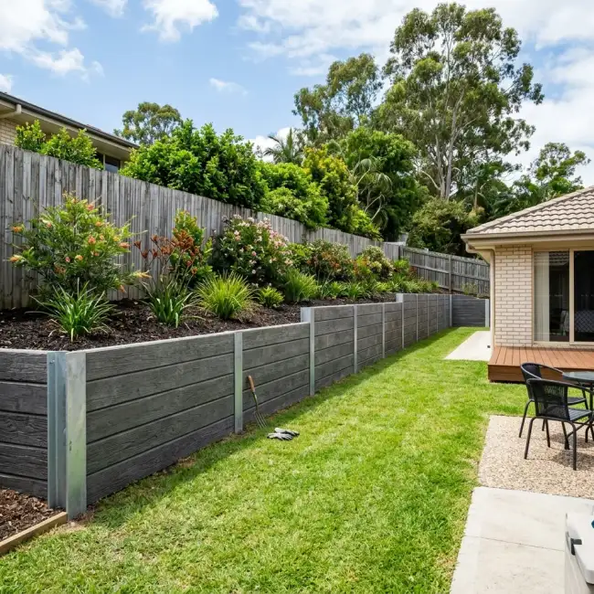

Concrete Retaining Walls Gold Coast
Struggling with a sloping block, soil erosion, or unusable hillside yard space? Poorly built timber retaining walls rot, attract termites, and collapse under heavy Queensland summer rain pressure. Our QBCC-licensed team designs and constructs heavy-duty 50MPa concrete sleeper retaining walls and cored concrete block walls engineered for lifetime hillside stability.
Request a Free Quote
Fill out the form below and our local team will contact you for a site measurement shortly.
Engineered Retaining Wall Systems
We specialize in structural concrete retaining walls built to withstand massive soil and water pressure across sloped South East Queensland blocks:
Concrete Sleeper Walls (H-Beam Posts)
Heavy steel H-beams embedded 1m–1.5m deep into solid rock footings filled with N32 concrete, holding 50MPa steel-reinforced concrete sleepers. Zero timber rotting, zero termite risk, 50+ year structural lifespan.
Core-Filled Concrete Block Walls
Concrete Boral blocks laid on steel-reinforced trench footings, steel N12 rebar vertical reinforcement, and core-filled with liquid concrete grout for massive load-bearing walls.
Hydrostatic Pressure & Rain Control on Sloped Blocks
Subtropical Gold Coast weather subjects retaining structures to severe ground forces during heavy summer storm seasons:
- • Torrential Summer Rain Runoff: Sudden 100mm+ downpours saturate hillside subsoil in Pacific Pines and Kingsholme, increasing lateral soil weight by up to 300%. Our engineered drainage relief system diverts groundwater safely before pressure builds up behind the wall.
- • Reactive Subsoils & Slope Movement: Sloped blocks along Ormeau Hills contain clay soils that swell when wet and contract during dry winters. Concrete sleeper systems with deep-set H-beams flex microscopic amounts without cracking, keeping your boundary lines permanently secure.
- • Termite Resistance Guarantee: Unlike treated pine timber sleepers that rot within 7-10 years and attract subterranean termites to your house foundation, 50MPa steel-reinforced concrete sleepers are completely immune to white ants and fungal decay.
Our Retaining Wall Construction Process
Excavation & Post Hole Drilling
We excavate soil along the wall line and use heavy auger equipment to drill deep 450mm post holes (1000mm–1500mm into solid subgrade) positioned every 2 metres.
Steel H-Beam & Footing Concrete
We set heavy-duty galvanized steel H-beam posts upright in the holes, double-check vertical level with laser alignment, and pour high-density N32 concrete footings around the steel posts.
Sleeper Insertion & Core Filling
Once footings set, we slot 50MPa steel-reinforced concrete sleepers into the steel H-channel channels, ensuring tongue-and-groove jointing forms a seamless earth barrier.
Ag-Pipe Drainage & Gravel Backfill
We lay 65mm slotted ag-pipe encased in geotextile filter fabric along the base and backfill 300mm behind the wall with clean 20mm aggregate gravel to guarantee instant water relief.
Why Cheap Retaining Walls Fail & Bulge (And How We Fix It)
Retaining wall collapses on the Gold Coast are almost always caused by improper drainage and shallow footings:
1. Omitting Drainage Gravel & Ag-Pipe
Backfilling directly with clay soil creates hydrostatic water buildup during summer downpours. The trapped water weight pushes walls forward until they collapse. We install 65mm slotted ag-pipe encased in geotextile fabric and backfill with clean 20mm aggregate gravel.
2. Shallow Steel Post Footings
Drilling post holes only 500mm deep allows the wall to lean forward under soil load. We drill 1000mm–1500mm deep post footings into solid subgrade before pouring concrete.
3. Using Timber Sleepers on Wet Slopes
Treated pine timber rots within 7 to 10 years in damp Queensland subsoils. We install 50MPa steel-reinforced concrete sleepers guaranteed to withstand soil moisture for decades.
Concrete Retaining Wall Services Across Northern Gold Coast
Sloped blocks, reactive soils, and heavy storm runoff make engineered concrete retaining walls essential across these key Northern Gold Coast suburbs:
Retaining Walls — Pacific Pines (4211)
Pacific Pines features steep, elevated residential allotments where terracing is required to create flat lawn areas, pool surrounds, and usable backyard space. We install 50MPa concrete sleeper walls with galvanized steel posts and deep ag-pipe drainage to prevent slope slippage during summer downpours.
Retaining Walls — Kingsholme & Montego Hills
Kingsholme (4208) acreage properties and Montego Hills estates frequently require heavy-duty cut-and-fill retaining walls for long driveways, house pads, and machinery shed footings. Steel H-beam posts set 1.5m into solid subgrade hold heavy concrete sleepers securely against lateral soil pressure.
Retaining Walls — Ormeau & Ormeau Hills
Upper Ormeau Road and Ormeau Hills sit on undulating terrain with reactive clay soil. Boundary retaining walls here prevent land wash and soil erosion between adjoining properties. We build engineer-certified concrete sleeper and cored block walls complying with City of Gold Coast building standards.
Retaining Walls — Pimpama & Coomera
Fast-growing residential developments in Pimpama (4209) and Upper Coomera often require perimeter retaining walls before pouring house slabs or driveways. Our concrete sleeper systems provide a clean, long-lasting boundary barrier that will never rot or attract termites.
Retaining Walls — Oxenford & Helensvale
In established hillside pockets of Oxenford (4210) and Helensvale (4212), old timber retaining walls built 15+ years ago are leaning and rotting. We specialize in timber wall removal and structural replacement using steel-reinforced concrete sleepers guaranteed for 50+ years.
Retaining Walls — Hope Island & Sanctuary Cove
Waterfront and golf course properties in Hope Island demand clean aesthetic finishes. We build cored concrete block retaining walls finished with smooth render or smooth-face concrete sleepers that complement high-end landscaping and canal frontages.
Recent Concrete Retaining Wall Installations

Sleeper Wall50MPa Concrete Sleeper Wall
Heavy steel H-beam post sleeper retaining wall with 65mm slotted ag-pipe gravel drainage in Pacific Pines.
 Wall Footings
Wall Footings
Reinforced Trench Footings
1200mm deep post footings filled with N32 concrete for hillside terrace stability in Kingsholme.
 On-Site Team
On-Site Team
Licensed QBCC Team On-Site
Fully equipped mobile concreting rig serving Pacific Pines, Kingsholme, Ormeau Hills, and Gold Coast.
What Property Owners Say
"Replaced an old rotting timber wall with a 1.4m concrete sleeper wall in Pacific Pines. The steel post footings are super deep and the ag-pipe drainage handled the summer rain with zero issues!"
Graham T.
Homeowner, Pacific Pines"Built a heavy-duty concrete sleeper wall for our Montego Hills acreage driveway cut in Kingsholme. QBCC certified, clean site, and built to engineered plans."
Robert H.
Acreage Property Owner, KingsholmeService Suburbs Across Northern Gold Coast
Frequently Asked Questions — Concrete Retaining Walls
Q: How much does a concrete retaining wall cost on the Gold Coast?
A: Retaining wall costs depend on wall height, total length, sleeper vs block specification, soil excavation requirements, and site access for machinery. Because every site is unique, we do not provide fixed online estimates. Call us on 0411 914 157 or fill out our quick quote form for a free, accurate, no-obligation on-site quote.
Q: Do concrete sleeper retaining walls rot or get termites?
A: No! Concrete sleepers are made from 50MPa steel-reinforced concrete. They are 100% immune to white ants, termites, dry rot, and water degradation.
Q: Do I need engineering or Gold Coast Council approval for a retaining wall?
A: Retaining walls over 1 metre in height (or walls carrying surcharge loads from driveways/structures) require structural engineering certification and council approval. We manage the full engineering and building certification process for you.
Q: How high can a concrete sleeper retaining wall be built?
A: Concrete sleeper walls with galvanized steel H-beam posts can be engineered up to 3 metres or higher using heavy structural posts, deep concrete footings, and engineer-designed terracing.
Q: Concrete sleepers vs concrete block walls: which is better for hillside yards?
A: Concrete sleepers offer a slim footprint and quick installation using steel posts, making them ideal for boundary lines and driveway cuts. Concrete block walls allow curved walls, integrated garden steps, and decorative rendered finishes.
Q: How long does a concrete sleeper retaining wall last compared to timber?
A: Treated timber sleeper walls typically begin rotting, bowing, or suffering termite damage within 7 to 10 years in subtropical Queensland soil. Steel-reinforced 50MPa concrete sleeper walls are engineered to last 50+ years with zero rotting or termite infestation.
Q: Can you replace an old rotting timber retaining wall with concrete sleepers?
A: Yes! Timber retaining wall replacement is one of our most common projects. We remove and dispose of your old rotting timber sleepers, excavate fresh 1m-1.5m post footings, set galvanized steel H-beams in N32 concrete, and slide high-strength concrete sleepers into place.
Our Partners
and construction commission